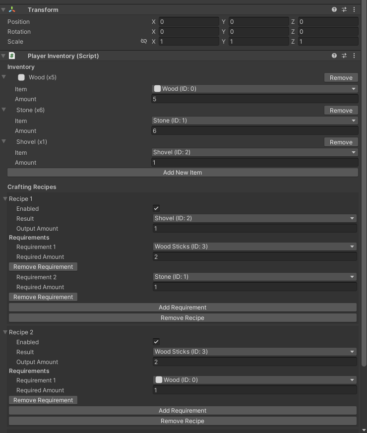
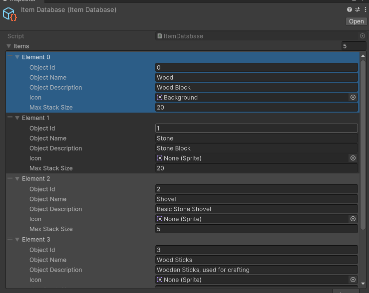
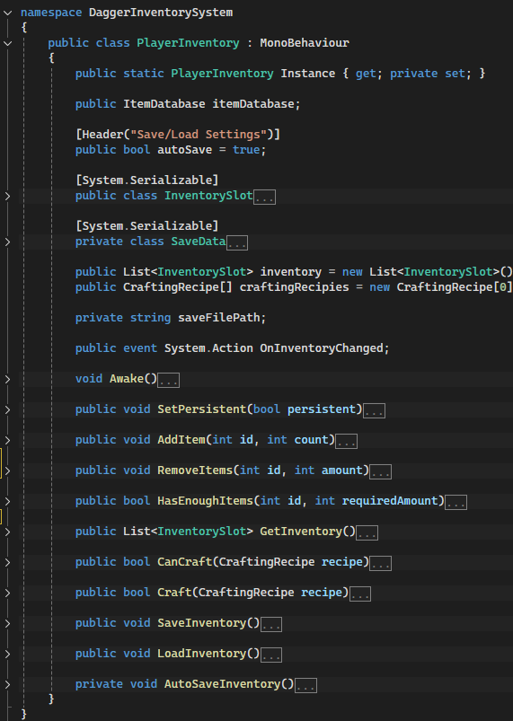

This tool was my first major step into Unity tool development. Through it, I learned database management,
Unity editor scripting, and how to structure modular systems for other developers. While I consider it a
learning project, it fills a niche in the Unity Asset Store and represents a critical advancement in my
development skills.
Key Features
- Customizable item database with user-defined fields.
- Inventory system supporting stackable items and max stack parameters.
- Editor-based crafting recipe management.
- Modular API-like calls for inventory management in gameplay code.
- Crafting system integrated directly with the inventory.
- Failure/success responses for accurate game logic control.
- Optimized for modular implementation across projects.
Current Status
Published!
View
in Unity Asset Store
Screenshots



Repository
View On My GitHub Profile →